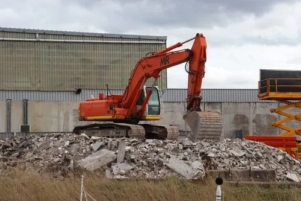
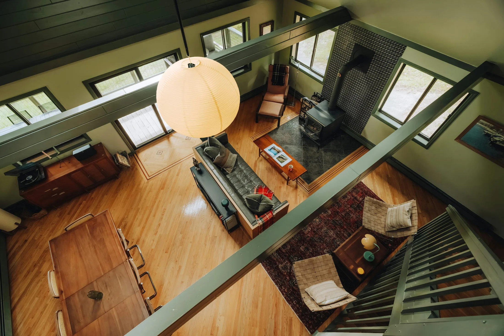
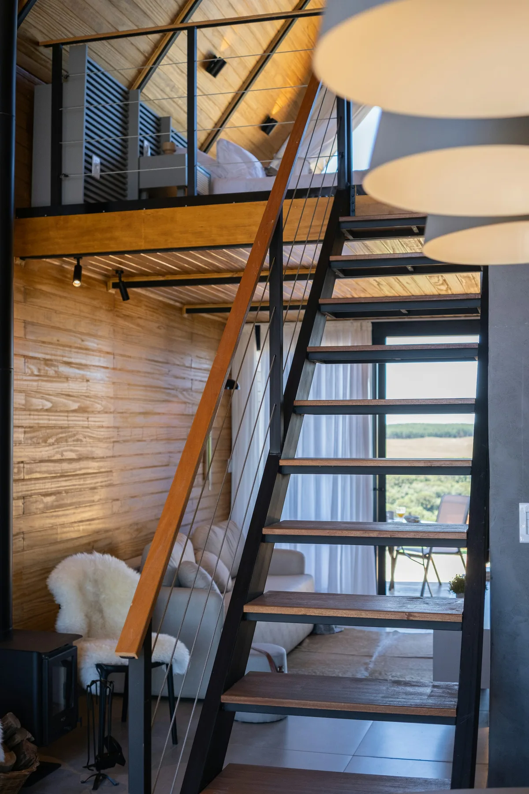
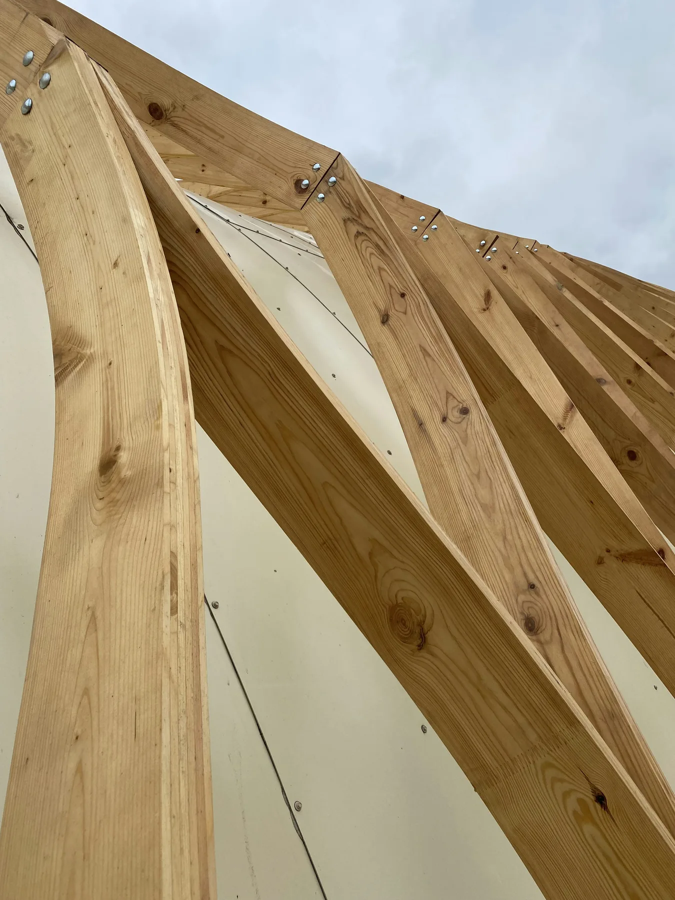

01 / RIVNING BILDREFERENSRivning
Planera nästa steg från en tydlig bild av vad som ska bort, vad som ska sparas och hur ytan ska användas.
Fråga om rivning
RIVNING · BYGG · RENOVERING
Från rivning till bygg och renovering. Ett tydligt samtal med Marko är en bra början på nästa steg.
01 / TJÄNSTER
Från rivning och bygg till snickeri och ytskikt. Vi börjar med att förstå uppdraget och förutsättningarna på plats.

01 / RIVNING BILDREFERENSPlanera nästa steg från en tydlig bild av vad som ska bort, vad som ska sparas och hur ytan ska användas.
Fråga om rivningBygg- och renoveringsarbeten med fokus på förutsättningarna på plats och det resultat du vill nå.
Beskriv ditt projekt
03 / SNICKERI & YTSKIKT BILDREFERENSByggnadssnickeri, golv- och väggarbeten samt måleri — arbeten som gör helheten färdig.
Berätta vad du behöverGolv- och väggbeläggning · Måleri · Skötsel av grönytor
Bilderna ovan är visuella referenser. De visar inte uppdrag utförda av MV Riv & Bygg.
02 / VARFÖR MV RIV & BYGG
En mindre verksamhet betyder att första kontakten går direkt till innehavaren. Börja med platsen, omfattningen och vad du vill få gjort.
Prata med MarkoMV Riv & Bygg drivs av Marko Valtakoski. Du behöver inte gå via en anonym växel.
Berätta vad som ska göras, var arbetet finns och vad som är viktigt för dig. Det gör nästa steg konkret.
Företagets bas är i Skene, Marks kommun. Fråga Marko om ditt projekt och dess plats.
03 / SÅ GÅR DET TILL
En enkel väg från första kontakten till ett tydligt beslut om arbetet.
Vad gäller jobbet, var finns det och vad vill du få gjort?
Gå igenom omfattning, plats och förutsättningar tillsammans.
Ta ställning till ett upplägg utifrån det ni kommit överens om.
Vid överenskommelse bestämmer ni nästa steg och hur arbetet ska genomföras.
04 / ARBETEN
Projektgalleriet fylls med dokumenterade arbeten när det finns bilder och information att dela. Under tiden får du gärna fråga Marko om ditt uppdrag.
Fråga om ett uppdrag
VISUELL REFERENS · EJ PROJEKTBILD05 / OM MARKO
MV Riv & Bygg drivs av Marko Valtakoski och har sin bas i Skene.
När du hör av dig pratar du direkt med innehavaren. Beskriv jobbet och platsen, så kan ni stämma av vad uppdraget kräver och vilket nästa steg är.
06 / VANLIGA FRÅGOR
Osäker på om jobbet passar? Fråga Marko direkt.
Ring 070 281 10 03Rivning, bygg och renovering, byggnadssnickeri, golv- och väggarbeten, måleri och skötsel av grönytor. Beskriv ditt specifika projekt så går ni igenom om det passar.
Priset beror på bland annat omfattning, material och förutsättningar på plats. Berätta vad arbetet gäller så kan Marko ta ställning till nästa steg och offertunderlag.
Ja, skicka en offertförfrågan eller ring. Ju tydligare du beskriver platsen och arbetet, desto enklare blir det att börja stämma av uppdraget.
MV Riv & Bygg har sin bas i Skene. Kontakta Marko med ort och omfattning så får du besked om just ditt uppdrag är aktuellt.
Det beror på arbetets omfattning och aktuell tillgänglighet. Ring eller skicka en förfrågan med önskat startdatum, så kan ni stämma av läget.
Ja. Du kan välja bilder i formuläret. När SMS-utkastet öppnas behöver du lägga till filerna i meddelandeappen innan du skickar.
OFFERT / KONTAKT
Fyll i det du vet om jobbet. När du är klar skapas ett SMS-utkast till MV Riv & Bygg, så kan du kontrollera uppgifterna innan du skickar.
RING MARKO070 281 10 03